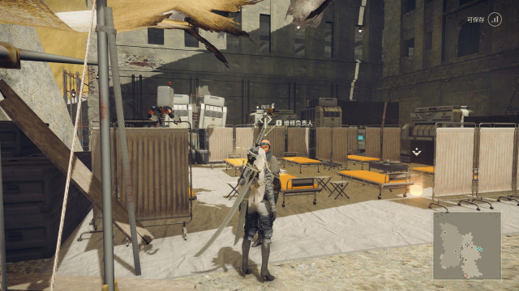

这里就是抵抗军军营内部了，最近战火又更加紧密，能留在军营里的已经非常少了，大家都有各自的事要做。
安妮·莫宁是这里的指挥官，他在大家的心中是一位足智多谋的领袖。
这位是武器商人，据说他是某位德高旺盛的锻造师的亲传弟子，也不知道是不是真的，不过他的手艺在这片土地确实首屈一指。
在军营的门口你会看到两位戴着头套的奇怪抵抗军，我从来没见到过他们摘下来头套，似乎也有着不可告人的秘密。
- 
这位是军营的维修负责人，如果身上某个零件损坏可以来找她。
这位是道具商人，你可以在这儿买到你想要的东西，当然，有多余的东西也可以出售给他，据说他自己的身体已经百分之八十是机械部位了，至于怎么变成这样的也就不得而知了。